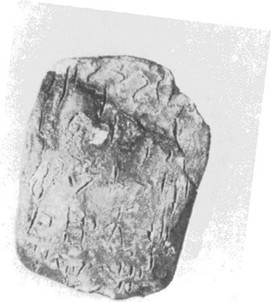
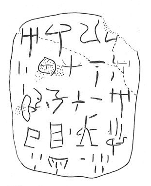

-
HT11a
Names
Aliases for the inscription.
HT11a, HT 11a
Support
Type of Object.
Tablet
Location
Site where object was found.
Haghia Triada
Findspot
Location at Site.
Villa Magazine


Scribe
Writer of Inscription.
HT Scribe 24
Context
Approximate Date of Inscription.
Late Minoan IB
1500-1450 BCE
Dimensions
Height x Length x Thickness.
5.80
4.40
0.70
cm
GORILA OCR
Catalogue
Museum Reference Number.
HM29
Hiraklion Museum
Readings
1 1 0 A none
1 1 0 RU none
1 1 0 RA none
1 1 1 *900 none
2 1 2 3 none
2 2 3 KA none
2 2 3 RO none
2 2 3 NA none
2 2 4 2 none
3 3 5 *322 none
3 3 5 RI none
3 3 6 1 none
3 4 7 KU none
3 4 7 RO none
3 4 8 10 none
3 5 9 A none
4 5 9 SU none
4 5 9 JA none
4 5 10 1 none
4 6 11 VIR+[?] none
4 6 11 I none
5 6 12 3 none
5 7 13 TA₂ none
5 7 14 10 none
5 7 14 5 none
Linear A Transcription
A Linear A transcription with words parsed separately.
Line breaks match the inscription.
𐘇𐘘𐘴𐄁
𐄉𐘾𐘁𐘅𐄈
𐙮𐘭𐄇𐙂𐘁𐄐𐘇
𐘲𐘱𐄇𐙇𐘚
𐄉𐘷𐄐𐄋
ASCII Transcription
An ASCII transcription with words parsed separately.
Line breaks match the inscription.
ARURA*900
3KARONA2
*322RI1KURO10A
SUJA1VIR+[?]I
3TA₂105
Linear A Tabulation
A Linear A transcription with words parsed separately.
Line breaks are logical, e.g. to represent a list.
𐘇𐘘𐘴𐄁𐄉
𐘾𐘁𐘅𐄈
𐙮𐘭𐄇
𐙂𐘁𐄐
𐘇𐘲𐘱𐄇
𐙇𐘚𐄉
𐘷𐄐𐄋
ASCII Tabulation
An ASCII transcription with words parsed separately.
Line breaks are logical, e.g. to represent a list.
ARURA*9003
KARONA2
*322RI1
KURO10
ASUJA1
VIR+[?]I3
TA₂105
HT 11
, page tablet (HM 29)
(GORILA I: 22-23)
HT Scribe 24
|
side.line
|
statement
|
logogram
|
number
|
fraction
|
|
a.1-2
|
A-RU-RA-[•]
|
|
]3
|
|
|
a.2
|
KA
-RO-NA
|
|
2
|
|
|
a.3
|
*
322
-RI
|
|
1
|
|
|
a.3
|
KU-RO
|
|
10
|
|
|
a.3-4
|
A-SU-JA
|
|
1
|
|
|
a.4
|
VIR-I
|
|
3
|
|
|
a.5
|
TA
2
|
|
15
|
|
|
|
|
|
|
|
|
b.1
|
]
DE
-
NU
|
|
|
|
|
b.1
|
RU
-RA
2
|
|
|
|
|
b.2
|
|
*
86
KA
|
40
|
|
|
b.2
|
|
KA
|
30
|
|
|
b.3
|
|
KA
|
50
|
|
|
b.3-4
|
RU-ZU-NA
|
KA
|
30
|
|
|
b.4-5
|
SA-QE-RI •
|
KA
|
30
|
|
|
b.5-6
|
KU-RO
|
|
1
8
0
|
|
a.1: RU over an erasure perhaps of SA
a.1: A-RU-RA-
SU
or A-RU-RA-
TA
a.2: RO over an
erasure containing perhaps TE or SA
a.3: KU-RO could be the total for
a.1-3, 3-4
b.1 or:]
DE
-
PA
3
b.1 or:
SA-RA
2
b.2-6, see the discussion of VIR+KA on the
homepage
, s.v. "KA". These citations may refer to the listings of KA on nodules Wa 1322-1470.
b.6: KU-RO is the total only for b.2-5, which is
separate section of the document
Commentary © John Younger
References
papers/GORILA-Vol1.pdf#page=58